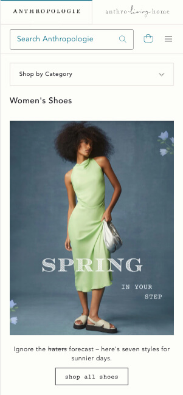

White Space
Anthropologie
anthropologie.com This Anthropologie website has plenty of space between the texts, images, and other elements and has a very clean and organized look. The image they used also has a minimal amount of text to keep the design plain and simple yet easy for the reader to understand the message of the image.
Alignment
Apple
apple.comThis Apple website is an excellent example of “Alignment.” Not only are all the texts aligned and centered, but all the images have the same alignment. The viewers can read the information by simply looking at the middle of the screen as they scroll down and also find the links at the end of each element.
Repetition
Buffalo Wild Wings
Buffalo Wild WingsYou can see the principle of repetition on this Buffalo Wild Wings website. Each menu item has an image, the category's name, and round corners with a white background. The repetition creates a visually organized website, making it easier for the viewers to identify the items they are interested in.